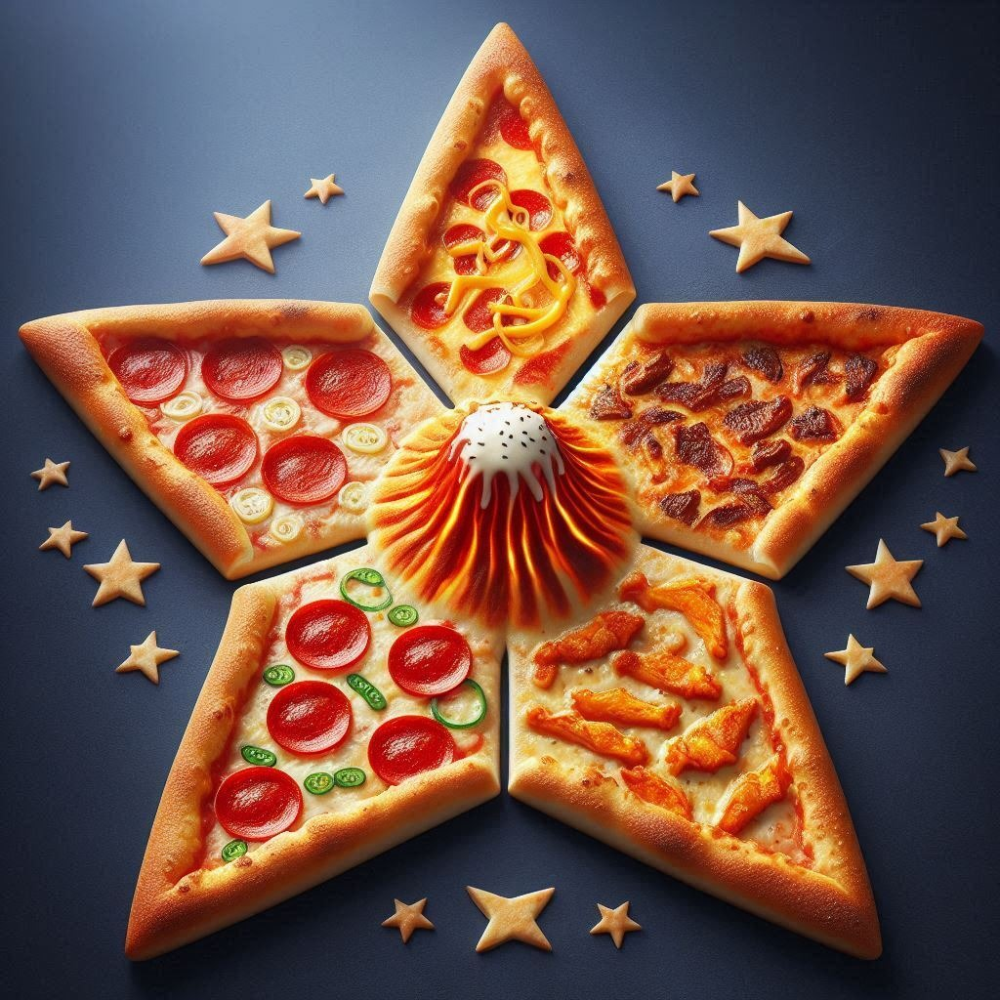

Visão Geral
Uma pizza em formato de estrela de cinco pontas, cada ponta homenageando o sabor mais icônico de um continente (Europa, Ásia, África, Américas e Oceania), sem repetições. No centro, um “vulcão” de queijo — uma cúpula de massa recheada de queijo à escolha do cliente — que, ao ser perfurada, irriga toda a pizza com um fluxo cremoso. A massa alia leveza e crocância (inspirada na massa de pastel), mas preserva o sabor tradicional de pizza.
Rendimento
- Diâmetro aproximado: 50 cm de “estrela” (de ponta a ponta)
- Porções: 5 pedaços (1 ponta + pedaço central “lava” por pessoa)
Ingredientes
Massa Crocante (Tipo “Pastel de Forno”)
- 500 g de farinha de trigo tipo 00
- 50 g de amido de milho (para aumentar a crocância)
- 10 g de sal fino
- 5 g de açúcar (ativa levedura e equilibra sabor)
- 7 g de fermento biológico seco
- 300 mL de água gelada
- 30 mL de óleo vegetal neutro (canola ou girassol)
- 15 mL de vinagre de maçã (ajuda na textura, mantém sabor neutro)
Vulcão de Queijo
- 200 g de muçarela de búfala ralada
- 100 g de queijo tipo cheddar cremoso
- 50 g de queijo prato em cubos
- 30 mL de creme de leite (para dar fluidez)
- Opcional (à escolha do cliente): gorgonzola, provolone ou mix de queijos artesanais
Recheios por Continente
| Continente | Sabor/Topping | Quantidade |
|---|---|---|
| Europa | Margherita clássico (molho de tomate, mussarela, manjericão fresco) | 100 g de molho; 150 g de muçarela; 5 folhas de manjericão |
| Ásia | Bulgogi coreano (carne bovina marinada, cebola, cebolinha) | 120 g de bulgogi; 50 g de cebola roxa fatiada; 10 g de cebolinha |
| África | Peri-peri (frango ao molho picante, pimentões coloridos) | 120 g de frango peri peri; 40 g de pimentão vermelho/amarelo |
| Américas | Pepperoni estilo NY (molho, muçarela, pepperoni artesanal) | 100 g de molho; 150 g de muçarela; 80 g de pepperoni |
| Oceania | Australian BBQ Chicken (frango barbecue, bacon em tiras, cebola) | 120 g de frango BBQ; 50 g de bacon defumado; 40 g de cebola |
Modo de Preparo
- Pré-fermentação da Massa
- Em tigela grande, misture farinha, amido, sal, açúcar e fermento.
- Adicione água gelada, óleo e vinagre; misture até formar massa homogênea.
- Sove por 8 min em bancada enfarinhada.
- Deixe descansar em câmara fechada a 26 °C por 40 min, até dobrar de volume.
- Modelagem em Estrela
- Abra a massa em disco de Ø 40–45 cm.
- Com régua e estilete culinário, desenhe uma estrela de cinco pontas (setas iguais) mantendo um círculo central de Ø 10 cm.
- Corte as pontas, reserve.
- Montagem do Vulcão
- Com o círculo central: modele uma “borda” de 2 cm de altura, formando um pequeno reservatório.
- Forre com massa um aro metálico de Ø 10 cm × 2 cm de altura (opcional).
- Misture os queijos e o creme de leite até homogeneizar; encha o reservatório.
- Feche com um disco fino de massa (Ø 10 cm) e aperte as beiradas.
- Distribuição dos Recheios
- Sobre cada ponta da estrela, espalhe o molho e os ingredientes do respectivo continente.
- Não ultrapasse o círculo central.
- Forno
- Preaqueça a 280 °C (forno a lenha ou forno profissional com pedra).
- Asse por 6–8 min até bordas dourarem e queijos gratinarem.
- Retire com pá perfurada.
- Acabamento e Serviço
- Apresente a pizza intacta ao cliente.
- Na mesa, o garçom perfura o topo do vulcão com faca/churrasco; o queijo derretido escorre sobre as pontas.
- Corte em 5 fatias seguindo as pontas: cada cliente recebe sua porção com “lava” no prato.
Justificativa de Cada Ingrediente
- Farinha tipo 00 + amido: equilíbrio entre elasticidade e alto grau de crocância (amido cria microbolhas).
- Vinagre de maçã: mantém o sabor neutro, melhora a extensibilidade da massa.
- Fermento seco (baixas doses): textura leve, sem sabor residual de fermentação.
- Óleo neutro: hidrata sem comprometer aroma.
- Queijos (muçarela de búfala, cheddar, prato): perfil de sabor e elasticidade; combinação ideal para “lava” fluida e saborosa.
- Molhos e toppings regionais: buscam fidelidade ao paladar local, ingredientes facilmente reconhecidos pelo público de cada continente.
Público-Alvo
- Gastrônomos e foodies: que valorizam inovação e experiência sensorial.
- Famílias e grupos: degustação coletiva, compartilhamento de sabores diversos.
- Eventos e celebrações temáticas: ideal para datas como Dia Mundial da Pizza, feiras internacionais, festas corporativas.
- Restaurantes especializados: menu “degustação” diferenciado, atração para mídias sociais.
Sustentabilidade de Materiais e Embalagem
| Item | Ação Sustentável |
|---|---|
| Ingredientes | Compra de insumos locais e sazonais para minimizar pegada de transporte. Carnes e queijos de produtores com certificação de bem estar animal e comércio justo. Hortaliças orgânicas e embalagens retornáveis. |
| Embalagem (caixa) | Papelão reciclado 100 %. Impressão com tintas à base de água e pigmentos naturais. Selagem com fita kraft biodegradável. |
| Utensílios e descartáveis | Guardanapos de papel reciclado. Talheres de madeira certificada FSC. Sacolas compostáveis para delivery. |
| Consumo de energia | Forno a lenha com manejo de biomassa sustentável (certificado). Uso de lâmpadas LED na área de preparo. |
Demonstração (Imagem ilustrativa)
|  |